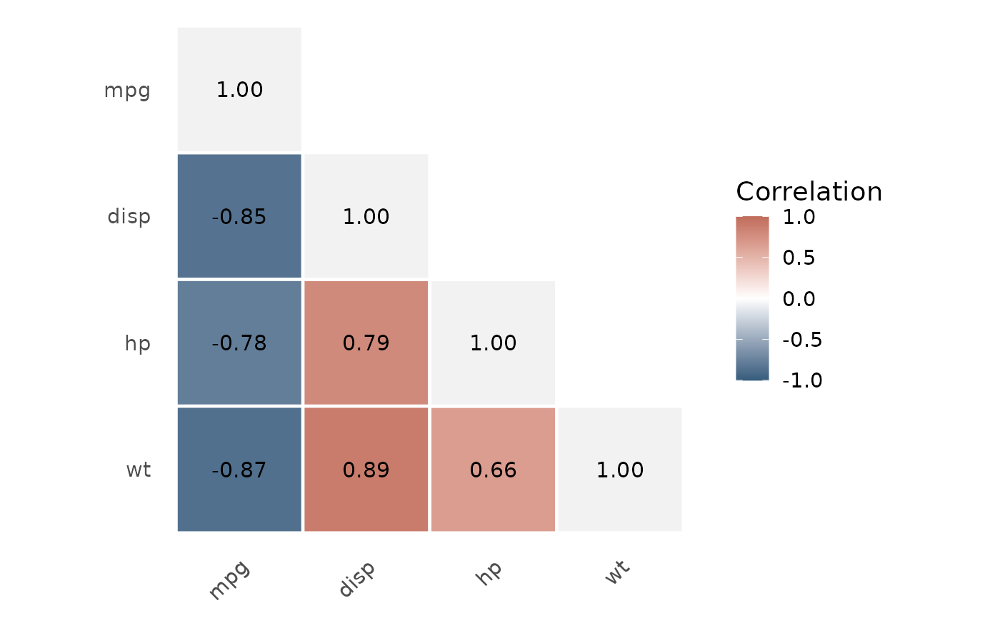

Correlation analysis for one pair or several continuous variables
Source:R/correlation-matrix.R
correlation.Rdcorrelation() analyses either one prespecified pair (x and y) or a
correlation matrix (vars). Matrix mode uses one method throughout, retains
pairwise sample sizes and inferential results in $summary, and prints a
compact publication-ready matrix. Use plot_correlation() for a shaded
heatmap of a matrix result.
Usage
correlation(
data,
x = NULL,
y = NULL,
method = c("auto", "pearson", "spearman"),
conf.level = 0.95,
digits = 2,
vars = NULL,
triangle = c("lower", "upper", "full"),
order = c("input", "alphabetical", "cluster"),
show_diagonal = TRUE,
display = c("estimate", "estimate_p", "estimate_n", "estimate_p_n", "estimate_ci"),
shade = TRUE,
missing = c("pairwise"),
adjust = c("none", "holm", "bonferroni", "BH"),
format = c("table", "tibble")
)Arguments
- data
A data frame.
- x, y
Two continuous variables supplied as bare names or character strings. Omit these when using
vars.- method
Correlation method:
"auto","pearson", or"spearman".- conf.level
Confidence level for intervals.
- digits
Number of decimal places used for display.
- vars
Optional vector of at least two continuous variables, supplied as
c(age, weight, outcome)or a character vector.- triangle
Matrix display:
"lower","upper", or"full".- order
Variable order in matrix mode:
"input"preserves the order invars,"alphabetical"orders display labels, and"cluster"places variables with similar absolute correlation patterns together.- show_diagonal
Logical; show self-correlations on the diagonal.
- display
Matrix cell content: correlation
"estimate","estimate_p","estimate_n","estimate_p_n", or"estimate_ci". Confidence intervals unavailable from the selected method are shown as an em dash in the tidy result and omitted from the matrix cell.- shade
Logical; apply coefficient-based shading to the publication matrix. This affects rendering, not
$summary.- missing
Matrix missing-data rule. Currently
"pairwise": each coefficient uses all complete finite observations for that pair.- adjust
Multiplicity adjustment for matrix p-values:
"none","holm","bonferroni", or"BH".- format
Output format:
"table"(default) or a plain console"tibble".
Value
A gt_correlation object. Matrix results additionally inherit from
gt_correlation_matrix and contain a tidy pair-level $summary.
Details
In automatic matrix mode, Pearson correlation is used only when every selected variable has absolute sample skewness below 1; otherwise Spearman correlation is used throughout. This is transparent descriptive guidance, not proof of linearity or monotonicity. Inspect the matrix heatmap and relevant pairwise plots before interpretation.
Examples
correlation(mtcars, x = mpg, y = wt)
correlation(mtcars, vars = c(mpg, disp, hp, wt))
plot_correlation(correlation(mtcars, vars = c(mpg, disp, hp, wt)))
